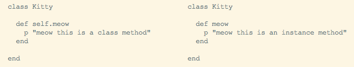

august 15, 2015
You don't have to look hard to find strong internet opinions about class methods in Ruby. Some non-supporters suggest doing away with class method usage entirely, while others insist they have their place and are fine in moderation. Before we start making rash judgments (only yesterday I didn't even know what a class method was), let's elaborate on the subject of our debate.
Thus far, I've worked with and blogged about instance methods. Instance methods are what you get if you simply define a method within a class. Each instance of the class will then have access to those methods. A class method varies from instance methods in that it is directly called on a class. There are a few way to do this, but the preferred style requires referring to self when defining the method. Here's a side-by-side example.
You can see that defining a class method is pretty syntactically similar to defining an instance method. The only difference is the inclusion of "self". Self moves around throughout a Ruby program, but in this case it's referring to the class Kitty. (I'll save self exploration for another post, another day.)
Now, that meow method was actually a bad example...I just couldn't resist the temptation to be punny. But in reality, meow is not a very realistic class method. Class methods can't be called by instances of the class--only by the class itself--so why create a method called meow that none of our Kitty instances can use? And what is our Kitty class going to do with a meow method?
In my limited experience with class methods, I can see only a few practical uses for them. Those uses would include anytime you need to do something to, or with, all the existing instances of a class. Say, if you wanted to list each instance, find a specific instance, or simply count how many instances of the class exist. In The Well-Grounded Rubyist, David A. Black suggests that a most_expensive method could be defined for class Ticket. It wouldn't make sense for this to be an instance method, since we're referencing all of the Ticket instances and returning the priciest one.
Some Rubyists insist that every time you think you should use a class method, you could use an instance method instead. For multiple complicated reasons that I don't feel I could adequately describe, many feel class methods are misused and often don't follow design best practices. The general consensus though, is that they are useful in certain situations, but should be employed sparingly.
I don't quite know enough about design in Ruby to have an opinion, so I'm going to defer to the all-knowing collective internets on this one and suggest using class methods only when you've determined that you need them.